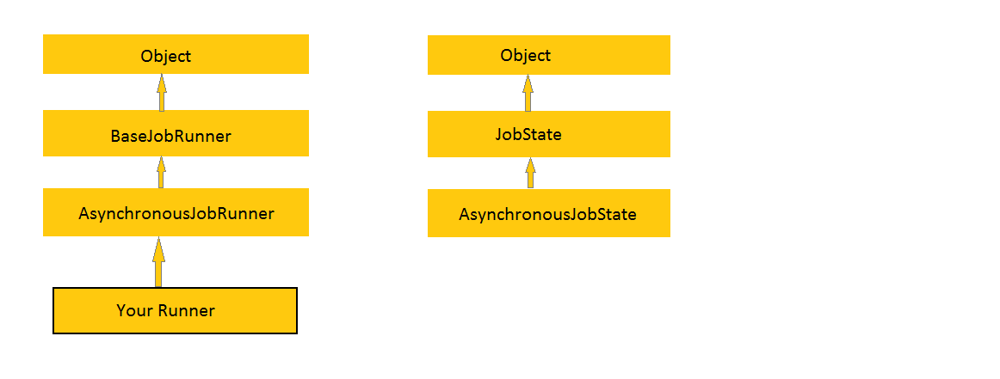
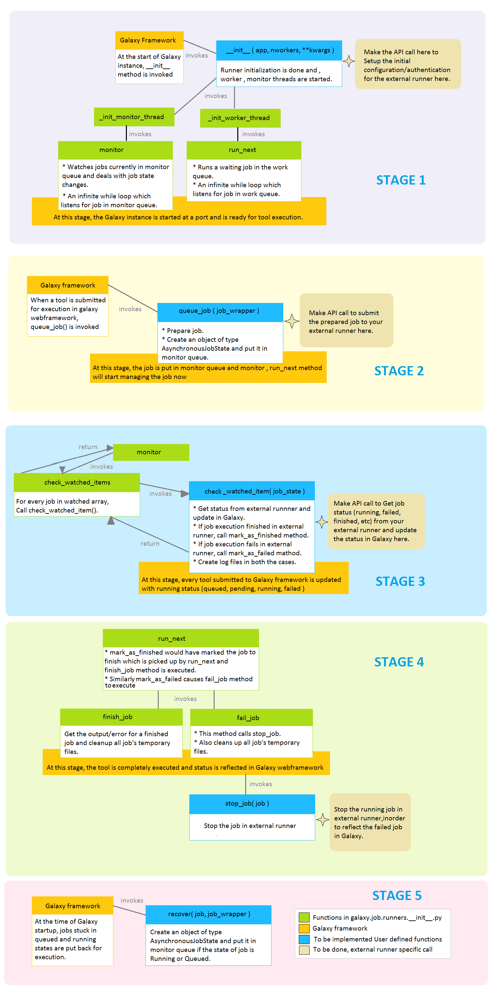
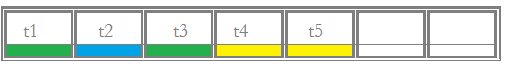

Build a job runner¶
A walk through the steps of building a runner for Galaxy¶
In this tutorial, we will build a runner in a block by block fashion (like building blocks), so we will divide the runner into components based on their function.
We assume you are familiar with setting up and managing a local installation of Galaxy.
To learn more about the basics, please refer to: https://galaxyproject.org/admin/get-galaxy/
To explore existing runners, please refer to: https://github.com/galaxyproject/galaxy/blob/dev/lib/galaxy/jobs/runners
What is required to make a runner for Galaxy?¶
galaxy.jobs.runners.__init__.py has the base runner implementation. To create a new runner, that base runner must be inherited and only certain methods need to be overridden with your logic.
These are the methods that need to be implemented:
__init__(app, nworkers, **kwargs)queue_job(job_wrapper)check_watched_item(job_state)stop_job(job)recover(job, job_wrapper)
The big picture¶
The above methods are invoked at various stages of job execution in Galaxy. These methods will act as a mediator between the Galaxy framework and the external execution platform. To know when and how these methods are invoked, we will look at the implementation of the parent class and process lifecycle of a runner.
Implementation of parent class (galaxy.jobs.runners.__init__.py)¶
Class Inheritance structure
The big picture!

The whole process is divided into different stages for ease of understanding.
Runner Methods in detail¶
1. __init__ method - STAGE 1¶
Input params:
appnworkers(Number of threads specified injob_conf.xml)**kwargs(Variable length argument)
Output params: NA
The input params are read from job_conf.xml and passed to the runner by
the Galaxy framework. Configuration of where to run jobs and external
runner configuration is performed in the job_conf.xml file. More
information about job_conf.xml is available
here.
Have a look at the sample job_conf.xml:
<job_conf>
<plugins>
<plugin id="local" type="runner" load="galaxy.jobs.runners.local:LocalJobRunner" workers="4"/>
<plugin id="godocker" type="runner" load="galaxy.jobs.runners.godocker:GodockerJobRunner">
<param id="user">gosc</param>
<param id="key">HELLOWORLD</param>
</plugin>
</plugins>
<handlers>
<handler id="main"/>
</handlers>
<destinations default="god">
<destination id="local" runner="local"/>
<destination id="god" runner="godocker">
<param id="docker_cpu">1</param>
<param id="docker_memory">2</param>
</destination>
</destinations>
</job_conf>
The following steps are followed to manipulate the data in job_conf.xml
A: Define structure of data under plugin tag (plugin tag in
job_conf.xml) as a dictionary.
runner_param_specs = dict(user=dict(map=str), key=dict(map=str))
B: Update the dictionary structure in kwargs.
kwargs.update({'runner_param_specs': runner_param_specs})
C: Now call the parent constructor to assign the values.
super(GodockerJobRunner, self).__init__(app, nworkers, **kwargs)
D: The assigned values can be accessed in runner in the following way.
print(self.runner_params["user"])
print(self.runner_params["key"])
The output will be:
gosc
HELLOWORLD
E: Invoke the external API with the values obtained by the above method for initialization.
Finally the worker threads and monitor threads are invoked for galaxy to listen for incoming tool submissions.
self._init_monitor_thread()
self._init_worker_threads()
2. queue_job method - STAGE 2¶
Input params: job_wrapper (Object of
galaxy.jobs.JobWrapper)
Output params: None
galaxy.jobs.JobWrapper is a Wrapper around ‘model.Job’ with convenience
methods for running processes and state management.
Functioning of
queue_jobmethod.A.
prepare_job()method is invoked to do some sanity checks that all runners’queue_job()methods are likely to want to do and also to build runner command line for that job. Initial state and configuration of the job are set and every data is associated with job_wrapper.B. Submit job to the external runner and return the jobid. Accessing jobs data (tool submitted in Galaxy webframework) is purely from
job_wrapper. eg:job_wrapper.get_state()-> gives state of a job (queued/running/failed/success/…)
Let us look at a means of accessing external runner’s configuration
present under destination tag of job_conf.xml in the above example.
job_destination = job_wrapper.job_destination
docker_cpu = int(job_destination.params["docker_cpu"])
docker_ram = int(job_destination.params["docker_memory"])
A special case: User Story: A docker based external runner is present. A
default docker image for execution is set in job_conf.xml. A tool can
also specify the docker image for its execution. Specification in tool
is given more priority than the default specification. To achieve such a
functionality. We can use the following statement:
docker_image = self._find_container(job_wrapper).container_id
Note: This pre-written method is only for getting the external image/container/os..
C. After successful submission of a job to the external runner, submit the
job to the Galaxy framework. To do that, make an object of type
AsynchronousJobState and put it in the monitor_queue.
ajs = AsynchronousJobState(files_dir=job_wrapper.working_directory, job_wrapper=job_wrapper, job_id=job_id, job_destination=job_destination)
self.monitor_queue.put(ajs)
3. check_watched_item method - STAGE 3¶
Input params: job_state (Object of
galaxy.jobs.runners.AsynchronousJobState)
Output params: AsynchronousJobState object
Without going into much detail, assume there is a queue to track the status of every job. eg:
The galaxy framework updates the status of a job by iterating through the
queue. During the iteration, it calls the check_watched_item method with the job.
Your responsibility will be to get the status of execution of the job from the
external runner and return the updated status of the job, and also to
copy the output files for the completed jobs.
Updated result after an iteration (after invocation of check_watched_item 6 times):
Note: Iterating through the queue is already taken care of by the framework.
To inform Galaxy about the status of the job:
Get the job status from external runner using the
job_id.Check if the job is queued/running/completed.. etc. A general structure is provided below.
Call
self.mark_as_finished(job_state), if the job has been successfully executed.Call
self.mark_as_failed(job_state), if the job has failed during execution.To change state of a job, change
job_state.runningandjob_state.job_wrapper.change_state()
def check_watched_item(self, job_state):
job_status = get_task_from_external_runner(job_state.job_id)
if job_status == "over_with_success":
job_state.running = False
job_state.job_wrapper.change_state(model.Job.states.OK)
create_log_files()
self.mark_as_finished(job_state)
return None
elif job_status == "running":
job_state.running = True
job_state.job_wrapper.change_state(model.Job.states.RUNNING)
return job_state
elif job_status == "pending":
return job_state
elif job_status == "over_with_error":
job_state.running = False
job_state.job_wrapper.change_state(model.Job.states.ERROR)
create_log_files()
self.mark_as_failed(job_state)
return None
Note:
get_task_from_external_runnerandcreate_log_filesare user-defined methods.The method should return
job_stateif the job should remain in the job runner’s list of watched jobs (i.e. if it is running or pending). If it no longer needs to be watched (e.g. it has terminated either successfully or with an error) it should return None.
create_log_files() are nothing but copying the files (error_file,
output_file, exit_code_file) from the external runner’s directory to
the working directory of Galaxy.
Source of the files are from the output directory of your external runner. Destination of the files will be:
output file ->
job_state.output_file.error file ->
job_state.error_file.exit code file ->
job_state.exit_code_file.
4. stop_job method - STAGE 4¶
Input params: job (Object of galaxy.model.Job)
Output params: None
Functionality: Attempts to delete a dispatched Job executing in an external runner.
When a user requests that the execution of a job in the Galaxy framework be stopped, a call is made to the external runner to stop the job execution.
The job_id of the job to be deleted is accessed by
job.id
5. recover method - STAGE 5¶
Input params:
job(Object of galaxy.model.Job).job_wrapper(Object of galaxy.jobs.JobWrapper).
Output params: None
Functionality: Recovers any jobs stuck in a queued/running state when Galaxy was started.
This method is invoked by Galaxy at the time of startup. Jobs in Running
& Queued status in Galaxy are put in the monitor_queue by creating an
AsynchronousJobState object.
The following is a generic code snippet for the recover method.
ajs = AsynchronousJobState(files_dir=job_wrapper.working_directory, job_wrapper=job_wrapper)
ajs.job_id = str(job_wrapper.job_id)
ajs.job_destination = job_wrapper.job_destination
job_wrapper.command_line = job.command_line
ajs.job_wrapper = job_wrapper
if job.state == model.Job.states.RUNNING:
ajs.old_state = 'R'
ajs.running = True
self.monitor_queue.put(ajs)
elif job.state == model.Job.states.QUEUED:
ajs.old_state = 'Q'
ajs.running = False
self.monitor_queue.put(ajs)